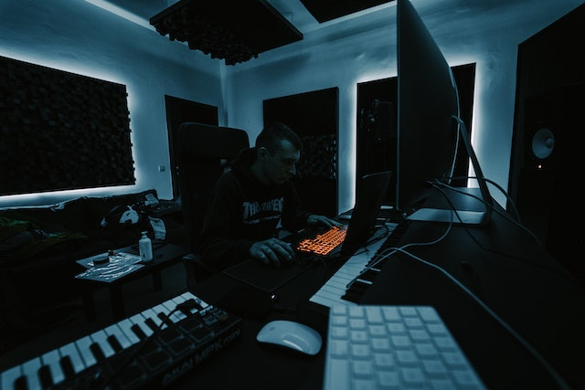

Sounds servicios
Estudios de grabación, producción musical, videografía, edición de video, grabaciones móviless, composición de canciones, doblaje de voz.

Nuestra Visión
Sounds es un estudio de grabación, una instalación de producción musical, un espacio para eventos en vivo y un centro para la comunidad musical ubicado en Santa Cruz, Argentina. Nos impulsa la firme creencia de que nuestro entorno de estudio de grabación tiene el poder de inspirar a músicos, artistas y actores al tiempo que proporciona la mejor calidad de audio posible.